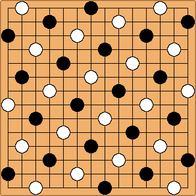

New game: Whirlwind
Luis Bolaños Mures
Posted on May 2, 2014, 8:07:27 PM
WHIRLWIND
Introduction
Whirlwind is a drawless connection game for two players: Black and White. It's played on the intersections (points) of an even-sized square board. The recommended sizes are between 12x12 and 20x20. The top and bottom edges of the board are colored black; the left and right edges are colored white.
At the start of the game, some black and white stones are arranged on the board in an interspersed pattern, as shown in the picture:

Play
Black plays first, then turns alternate. On his turn, a player must place one one or two stones of his color on empty points of the board. On his first turn, Black can only place one stone. Passing is not allowed.
At the end of a turn, any two like-colored, diagonally adjacent stones must share at least one orthogonally adjacent, like-colored neighbor.
Objective
The game is won by the player who completes a chain of orthogonally adjacent stones of his color touching the two opposite board edges of his color. Draws are not possible.
Acknowledgements
The restriction on diagonal connections as a means to prevent deadlocks was first used in Corey Clark's Slither.